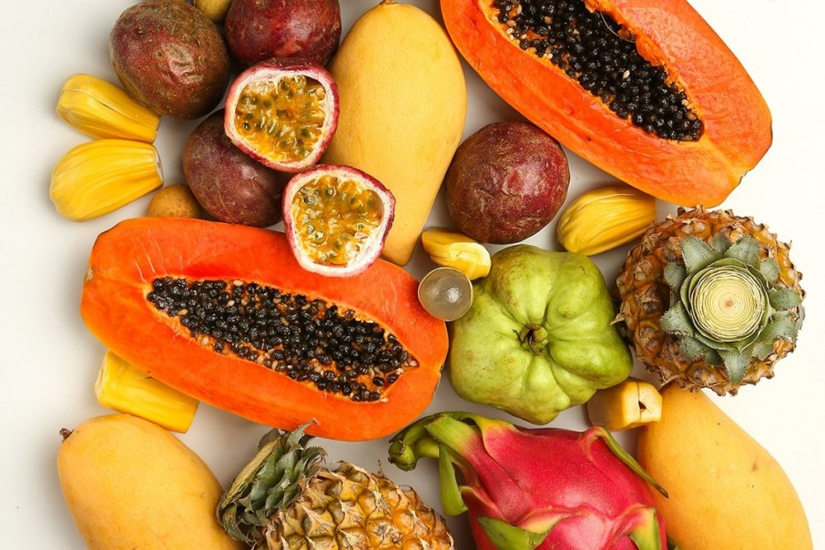

Csodálatos berry
A lonc nagyon hasznos növény. Ez egy cserje (1,5–2,5 m magas), felálló vagy kissé ívelt hajtásokkal. A korona kompakt, a levelek kicsik, serdülő. A virágok ragyogó aromájúak és jó mézes növények. A bogyók sötétkék, kékes virágú, lédús, illatos és ízletes. A lonc antocianinokat tartalmaz, amelyek a pektinnel együtt antioxidánsként működnek, meghosszabbítva a sejtek életét és megakadályozva azok rosszindulatúvá történő degenerálódását. Ezek a bogyók szelént tartalmaznak - az "ifjúság elemét", amely a vadon élő állatokban rendkívül ritka. A szelén védi immunrendszerünket, növeli a test ellenálló képességét a különféle negatív hatásokkal, vírusokkal és baktériumokkal szemben. A szelén másik fontos tulajdonsága az E és C vitaminnal való szinergizmusa. Ezek a vitaminok erőteljes antioxidánsok és elősegítik egymás tevékenységét, megakadályozzák a sejtek és a test szöveteinek oxidációját, és ezáltal jelentősen lelassítják öregedésüket. Ezen túlmenően ez a kis bogyó egész sor gyógyászati anyagot tartalmaz: B csoport vitaminjai, A, C, P, vitamin, magnézium, kálium, nátrium, foszfor, vas, karotinoidok, pektinek, szerves savak, tanninok, rubídium, nyomelemek, makrocellák. Különösen fontos ezeknek a bogyóknak a korai érési időszak (május közepétől), valamint a betegségekkel és kártevőkkel szembeni rezisztencia. A lonc nagy gyógyító és egészségügyi értékkel bír. A friss bogyós gyümölcsök jól tonizálják a testet, erőteljes helyreállító tulajdonsággal rendelkeznek. Gyulladáscsökkentő, choleretic, diuretikum, fekélyellenes hatásuk van. A bogyók az emésztőrendszer, a vesék, a máj, a szív- és érrendszeri megbetegedések, a magas vérnyomás, a vérszegénység és a betegségek kezelésében is segítenek. A bogyós maszkok javítják a bőr állapotát. Számos bőrbetegség kezelhető a lonc bogyóiból nyert gyümölcslé felhasználásával. Az ágokat, leveleket, kéreg és a loncvirágokat a népi orvoslásban is használják. Vizelethajtó, choleretic, fertőtlenítő és gyulladásgátló hatásúak.
Buy now!